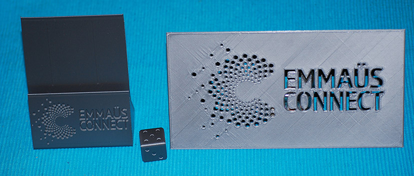

Je suis actuellement conseillère numérique au sein de l'association Emmaüs Connect qui lutte contre l'exclusion numérique.
Je suis en charge d'organiser et d'animer des ateliers d'initiation au numérique dans la structure mais aussi avec des partenaires.
Je travaille aussi sur des projets impliquant des bénévoles (linux, reconditionnement de PC...).
J'ai participé à la formation de conseiller numérique France Service et dans ce cadre j'ai eu l'opportunité de me former et d'utiliser des outils numériques très fun, une imprimante 3D, le robot pédagogique Mbot et un kit Arduino.
Voilà des exemples d'impressions 3D réalisées

Les fichiers stl pour le pochoir, le support pour flyer et le dé
Fiches action et présentations pour les ateliers que j'ai préparées dans le cadre de la certification.
Atelier d'initiation à LibreOffice Calc :
Atelier à destination d'un public jeune ou adulte dont le niveau d'autonomie numérique est intermédiaire ou avancé et qui veut apprendre à utiliser un tableur.
Atelier co-concu avec Oana Ciobanoiu.
Support de présentation pour l'animateur
Fiche action et trame d'animation pour l'animateur
Tutoriel de Solidarité numérique pour installer LibreOffice
Fiche résumé sur l'interface du tableur Calc du Blog du Prof T.I.M.
Atelier "Nettoyer et sécuriser son smartphone android"
Atelier à destination d'un public adulte possédant un smartphone et ayant un niveau de maitrise intermédiaire de son smartphone.
Atelier co-concu avec Oana Ciobanoiu.
Support de présentation pour l'animateur
Fiche action et trame d'animation pour l'animateur
Atelier "Réaliser un thermomètre à affichage numérique avec Arduino et l’impression 3D"
Atelier à destination d'un public adulte qui souhaitent s’approprier les outils d’impression 3D et microcontrôleur avant de réaliser un projet plus ambitieux.
Fiche action, fiche technique et trame d'animation pour l'animateur

Ce(tte) œuvre est mise à disposition selon les termes de la Licence Creative Commons Attribution - Pas d’Utilisation Commerciale - Partage dans les Mêmes Conditions 4.0 International